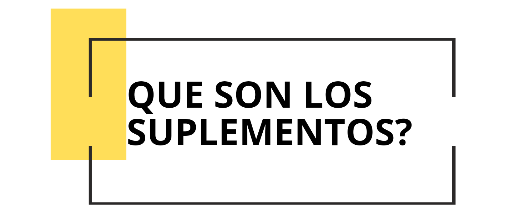
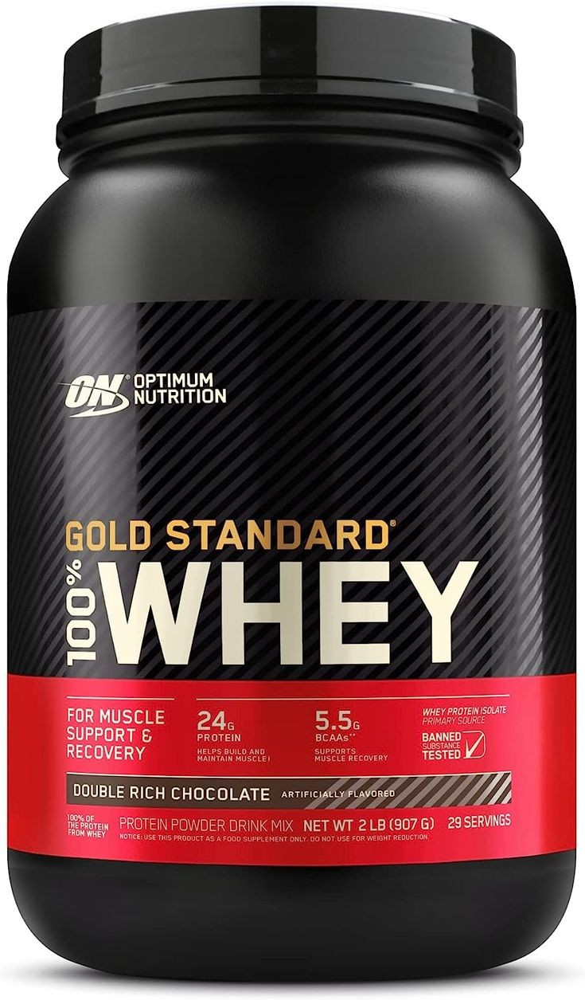
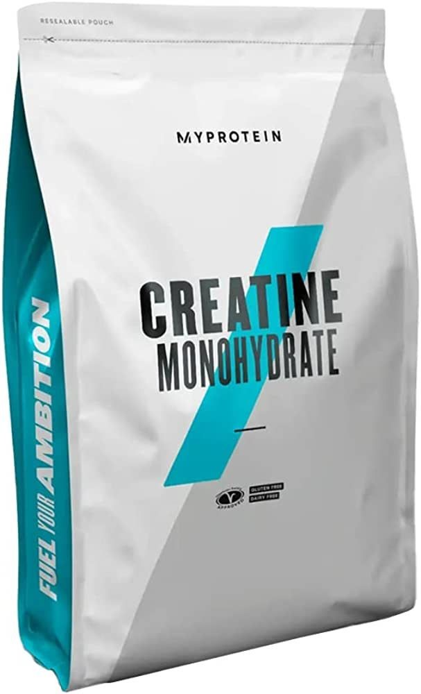
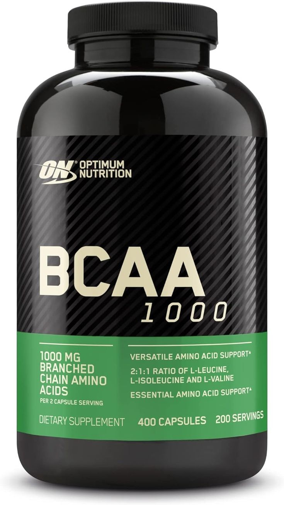
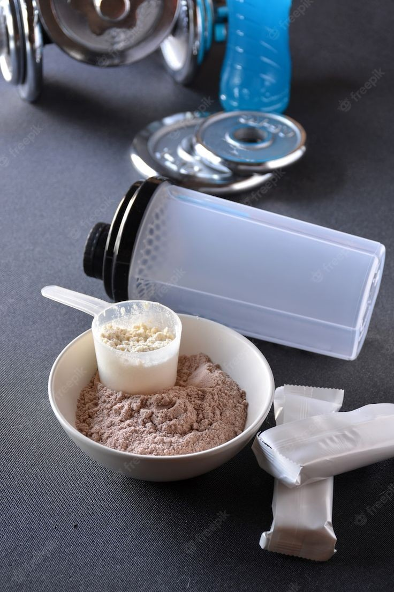

R.MENU
Los suplementos alimenticios son productos que se consumen por via oral, que ayudan a alcanzar el regimen colico y proteico, que se necesita para que el musculo se pueda recuperar, mejorar la resistencia y crecer, dejando en claro que no son indispensables si se lleva una alimentacion sana y con abundantes proteinas y minerales

la mayoria de los suplemetos de proteina estan fabricados con proteinas caseina y suero de leche. estos suplemtos se suelen vender en polvo y se pueden mezclar con agua, leche o algun otro tipo de liquido este tipo de suplemento se suele anunciar como una forma de ganar musculatura de manera rapida. pero la mayoria de las personas no la necesita, ya que obtiene las proteinas necesarias a partir de la dieta.Un suplemento de proteinas puede ayudar a las personas que no ingieren la cantidad suficiente lo que podria ayudar a:

La creatina es una sustancia que fabrica el cuerpo de manera natural. Participa en la fabricacion de energia que se necesita para las contracciones musculares. La creatina artificial se vende en forma de polvo o pastillas, asi como en barras energeticas y bebidas energeticas. los estudios demuestran que ayuda a deportistas que que realizan actividades fisicas que requieren e breves episodios de ejercicio iintenso con breves tiempos de recuperacion

Ahí entran en juego los aminoacidos, compuestos organicos que se combinan para formar proteinas. Las proteinas son esenciales para el funcionamiento de todas las celulas y los tejidos. Hay de distintos tipos y los encontramos en muchos alimentos, en determinadas situaciones es recomendable combinarla con una dieta saludable de suplementos con el fin de mantener a nuestro organismo en un estado optimo para practicar nuestro deporte.
